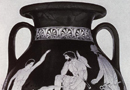

The Afterlife in Homer
But let’s return first to look at the earliest account of the underworld which is found in the Odyssey of Homer, written in the 8th or 7th century B.C.E. This myth is told as part of the return of Odysseus from Troy; he is shipwrecked and driven off course, and it takes him 10 years to find his way home to his wife Penelope. On his way, he experiences many adventures, one of which is a trip to the underworld. He is instructed to go to the land of the dead by the witch Circe, in order to consult the Theban seer Tiresias. Odysseus and his companions sail to the ends of the earth and Odysseus makes contact with the dead:
Here at the spot Perimedes and Eurylochus held the victims fast, and I, drawing my sharp sword from beside my hip, dug a trench of about a forearm’s depth and length and around it poured libations out to all the dead, first with milk and honey, and then with mellow wine, then water third and last, and sprinkled glistening barley over it all, and time and again I vowed to all the dead, to the drifting, listless spirits of their ghosts, that once I returned to Ithaca I would slaughter a barren heifer in my halls, the best I had, and load a pyre with treasures-and to Tiresias alone, apart, I would offer a sleek black ram, the pride of all my herds. And once my vows and prayers had invoked the nations of the dead, I took the victims, over the trench I cut their throats and the dark blood flowed in-and up out of Erebus they came, flocking toward me now, the ghosts of the dead and gone…. Brides and unwed youths and old men who had suffered much and girls with their tender hearts freshly scarred by sorrow and great armies of battle dead, stabbed by bronze spears, men of war still wrapped in bloody armor-thousands swarming around the trench from every side-unearthly cries-blanching terror gripped me!
This description of Odysseus’ first encounter with the dead is terrifying – the ghosts of the dead wail and move around him. The underworld will become a happier place in latter accounts, but in the Odyssey it is a gloomy place which is best avoided. However, as this passage also makes clear, it is not possible to avoid it; the all encompassing and democratic nature of death is underlined. There is also a lot in this passage which suggests religious ritual; it is known that in actual Greek religious worship, sacrifices were made in pits to those in the underworld. In particular, what brings the dead alive is the offering of blood which is symbolic of life flowing through the veins. With the exception of Tiresias, who is a very special case, the souls of the dead are lacking in consciousness and are unable to speak to Odysseus until they have tasted blood. By tasting blood the spirits are for a time revitalised and able to communicate with the world of the living (see image 1 of Odysseus in underworld). 
{kind=link}
Before actually meeting Tiresias in the underworld, Odysseus encounters the recently departed soul of his comrade Elpenor, who had unbeknownst to Odysseus died back on Circe’s island by getting drunk and falling off a roof. Elpenor begs him to return and bury his body. Proper burial is an important issue in the Greek world, and all individuals should received a proper burial (when Achilles’ friend Patroclus dies in the Iliad there is a long description of his funeral), and while there is not a clear sense that Elpenor is not fully accepted into the underworld because he has not been buried, his soul is not at rest until this has been done.
Even for those who have a better lot in death, it is made clear in Homer’s conception of the underworld that life is in every way preferable to death. Odysseus also encounters his mother and other of his friends from Troy in the underworld; perhaps his most famous encounter, however, is with the great hero Achilles, the semi-divine hero who brought about the destruction of Troy but was fated to die doing so. Odysseus speaks to him:
Achilles, son of Peleus, greatest of the Achaeans, I had to consult Tiresias, driven here by hopes he would help me journey home to rocky Ithaca. Never yet have I neared Achaea, never once set foot on native ground… my life is endless trouble. But you Achilles, there’s not a man in the world more blest than you-there never has been, never will be one. Time was, when you were alive, we Argives honoured you as a god, and now down here, I see, you lord it over the dead in all your power. So grieve no more at dying, great Achilles.’ I reassured the ghost, but he broke out, protesting, ‘No winning words about death to me, shining Odysseus! By god, I’d rather slave on earth for another man-some dirt-poor tenant farmer who scrapes to keep alive-than rule down here over all the breathless dead.’
Death, then, is not something which is pleasant in the Homeric conception; although Odysseus suggests that this might be the case for Achilles, he is sharply rebuked. That said, Odysseus goes on to encounter several individuals who suffer particularly harsh punishments in the underworld – their fate is more similar to Christian conceptions of hell, and have fascinated generations of readers. One of these is Tantalus, who is eternally tantalized by water to drink and food to eat, only for this to recede when he attempts to get it. This is a horrendous punishment which was given to Tantalus as a punishment for transgressing against the gods. He was a great king amidst the first generations of mankind, who was allowed to dine with the gods. Different versions of the myth have him tell humans what the gods said at such dinner, steal the divine food of the gods, or test the gods by killing and cooking his son Pelops to see whether they would detect the food – Demeter is supposed to have eaten a piece of shoulder from the stew.
Odysseus also sees Sisyphus, who must for eternity push a great boulder up a hill, only to have it fall down once over and over. Once again, Sisyphus receives this punishment because he sins against the gods. He was said to have angered Zeus by telling the river-god Asopus that he had carried off his daughter Aegina, and Zeus sent Death (Thanatos) to get him. However, Sisyphus trapped Death in chains, during which time no humans died – until Ares, the god of war, freed death and he took his revenge on Sisyphus. He sinned against Zeus, and is therefore punished in the underworld. It must be emphasized that in the Homeric view of the afterlife, such punishment is not the result of moral failing in one’s interaction with other humans, but rather the result acting in some way against the gods.